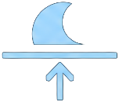
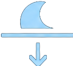

--
--
--
----
--:--:--
HEURES
MINUTES
SECONDES
Marloie (Marche-en-Famenne)
MÉTÉO ACTUELLE
--°C
Ressentie --°C
Chargement météo…
💧 HUMIDITÉ
--%
💨 VENT
-- km/h
☀️ UV
--
💧 PRÉCIP.
-- mm
Données météo :
Open-Meteo
SAISON
ÉTÉ
SOLEIL
LEVER
06:48
COUCHER
20:26
LUNE
Calcul…
Âge :
--
jours
Éclairement :
--
%
LEVER
--:--

COUCHER
--:--
